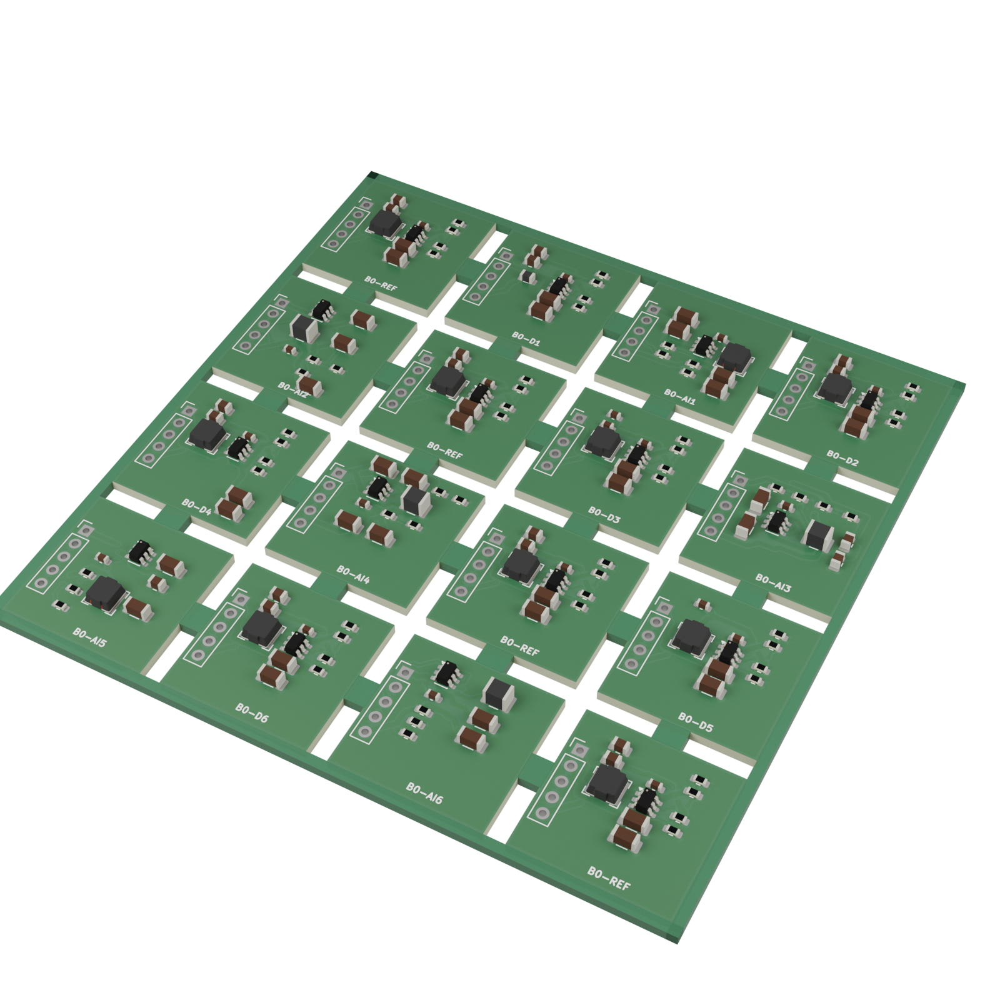
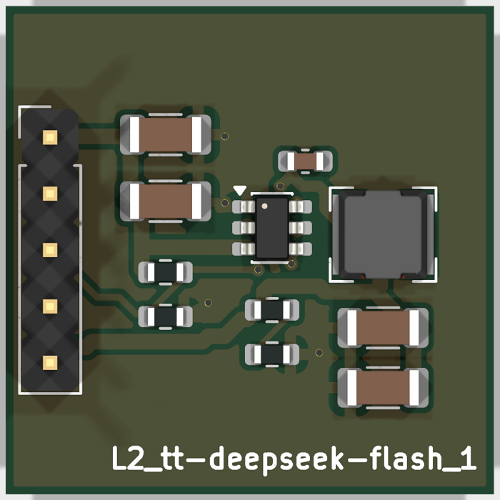
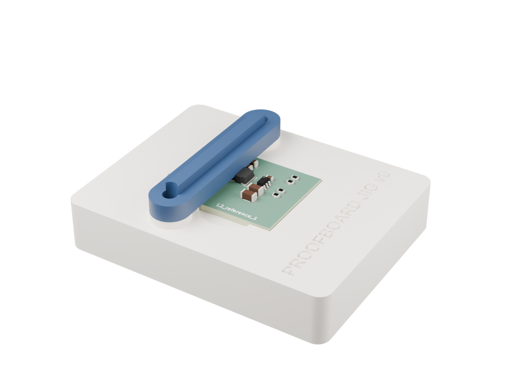
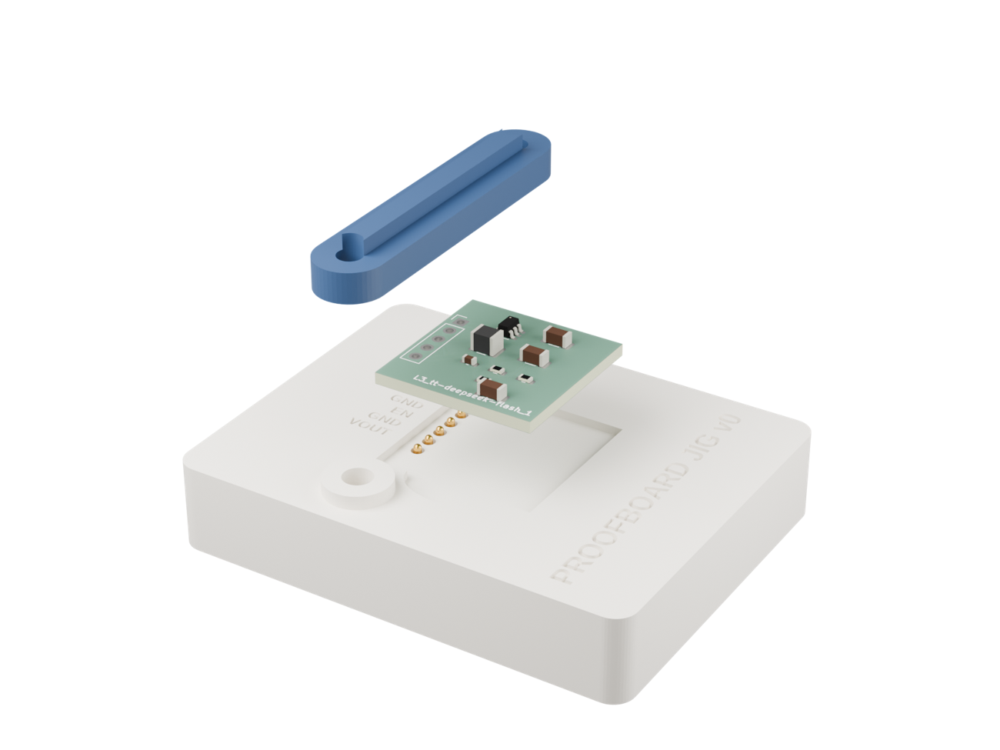

Sixteen boards, one panel, one honest score.
Everything on this page was designed, checked and rendered by the Proofboard harness in November 2026. Nothing has been manufactured yet.

Batch 0 as it will be ordered: one 100 × 100 mm panel, five copies from the factory.
Four references, six known defects, six AI designs.
The four identical references measure the bench's own noise. Each defect board changes exactly one thing from the reference, so the bench has to see that one difference. The six AI cells are DeepSeek designs: five pass every hard check, one repeats a capacitance mistake the rules catch.
What the rules catch — and what they don't.
Five of six known defects are stopped by datasheet rules before any board exists. One — the far input capacitors — passes every rule. That's exactly the kind of mistake only a bench can price.
| Cell | Change | Rules | What happened |
|---|---|---|---|
| B0-D1 | Low-saturation inductor 0.42 A saturation current on a 1 A converter. | Caught | T2.ISAT, T2.IRMS, T2.L_RANGE. First it broke our own router — fixed the same day (see below). |
| B0-D2 | High-resistance inductor 10 µH with 180 mΩ of winding resistance. | Caught | T2.L_RANGE — outside TI's recommended 2.2–4.7 µH. |
| B0-D3 | Capacitors that shrink 22 µF / 6.3 V output caps in 0603. | Caught, barely | T2.COUT_EFF — 19.8 µF effective at 3.3 V, against a 20 µF minimum. |
| B0-D4 | Far input capacitors Same parts as the reference, moved to the corner. | Passes every rule | Only warnings. This is the case the bench has to decide. |
| B0-D5 | One small output cap A single 4.7 µF capacitor. | Caught | T2.COUT_EFF — 4.1 µF effective. |
| B0-D6 | Divider on the edge 34 k / 10 k instead of 33.2 k / 10 k. | Caught | T2.VOUT_NOM — 3.379 V, outside ±2 %. |
DeepSeek against the reference.
The first real test of the harness: DeepSeek Flash designed the module twice — placing a fixed circuit (L2) and designing it from scratch (L3). Both passed every hard check. The warnings are where the bench has to decide.

Reference
- Input loop4.80 mm
- SW loop2.54 mm
- Output3.302 V
Hand-placed from the TI layout guidance.

DeepSeek · L2
- Input loop5.57 mm
- SW loop4.62 mm
- Output3.303 V
Passed on the first try. Same inductor as the reference, its own divider and output caps.

DeepSeek · L3
- Input loop9.11 mm
- SW loop5.01 mm
- Output3.311 V
First try had too little input capacitance at 8.4 V; fixed after feedback. Picked a 2.2 µH inductor: 1.57 A ripple at 1 A out.
What the run taught us about our own harness
- The first attempt failed for a reason that wasn't the model's: our 8,000-token answer limit cut a reasoning model off mid-thought. Truncated answers are now counted against the harness, not the model.
- Four of the next six DeepSeek designs failed for our reason, not theirs: on a 22 mm board the ground pour split into islands and our router never connected them. Ground is now routed like any other net; all six designs were re-checked.
- Our 40 % inductor-ripple warning also fires on TI's own recommended 4.7 µH value. That threshold is our rule, not the datasheet's, and needs recalibrating — against measurements.
A jig for any design.
Five spring pins press into the module's connector pads from below; a clamp bar presses down on the same strip, so the parts a model places are never touched. Pin positions come from the same constants the harness uses, so every generated board fits.
Modelled in OpenSCAD for a school FDM printer, rendered in Blender with DeepSeek's L3 board in the pocket. Not printed yet.


Proofboard Jig v0: base, five pogo pins, clamp bar on two M3 screws.